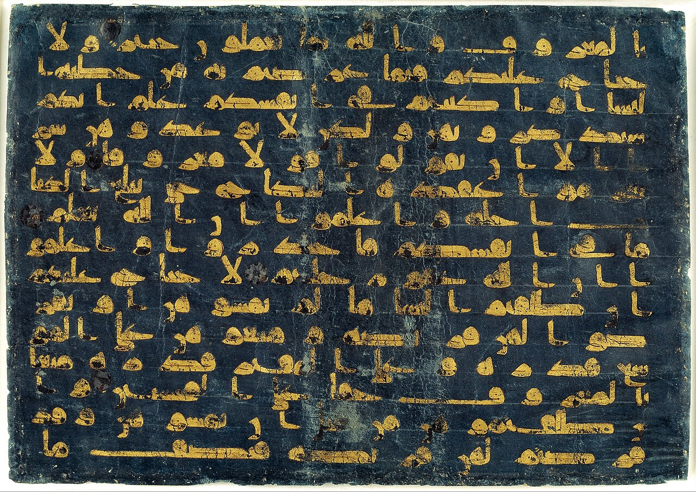
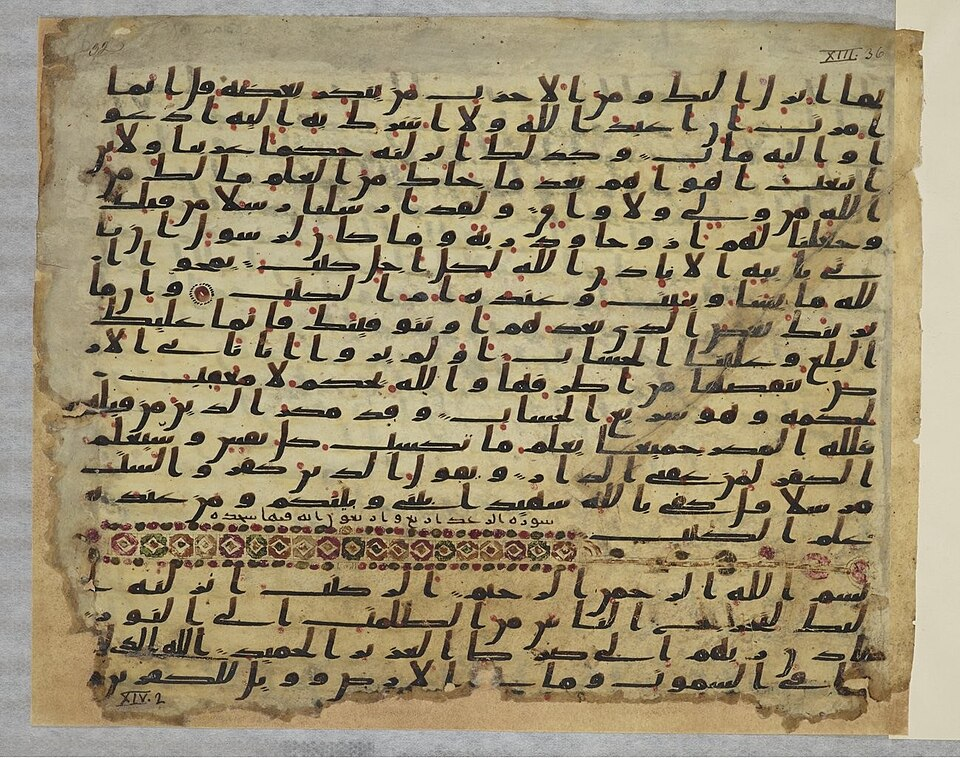
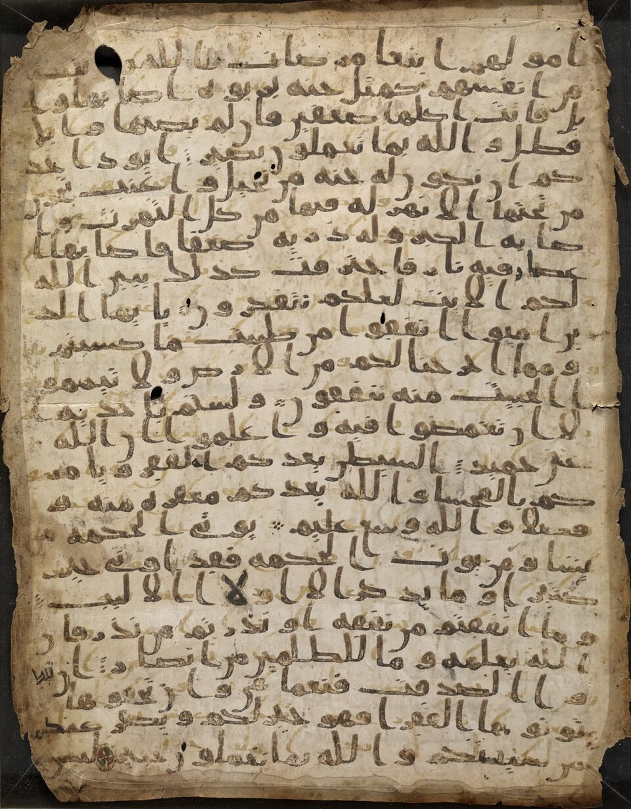
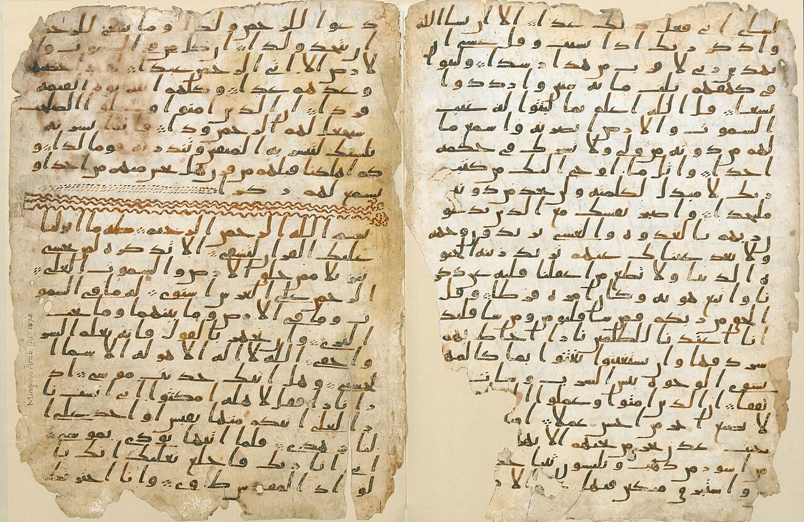

The Different Versions
of the Quran
An investigation into the 10+ canonical Quranic recitations, their origins, and documented textual differences — verified from Islamic and academic scholarship.
Multiple Qurans exist. There are at least 10 canonically accepted Quranic recitations (qira'at) with documented textual differences — different words, verb forms, singular/plural nouns, pronouns, and grammar. Over 10,000+ variants are documented in Islamic scholarship.[1]
The Different Qurans in Use Today
Each has its own chain of transmission, its own printed edition, and documented textual differences from the others.





The Remaining Five
Less commonly recited today, but all canonically accepted within Islamic scholarship.
How Did This Happen?
From oral recitation to multiple printed versions.
Documented Textual Differences
Not pronunciation. Different words, grammar, and meanings — documented by Islamic scholars.
Sources & Citations
Every claim verified from academic and Islamic scholarly sources.
- Omar & Makram. Mu'jam al-Qira'at al-Qur'aniyah. 6 vols. Cairo, 1997. 10,243+ variants.
- Reynolds, G.S. "Variant Readings." TLS, 2015. Mattson, I. The Story of the Quran, 2013.
- Qadhi, A.Y. An Introduction to the Sciences of the Quran. 1999, p. 199.
- Green, S. "The Different Arabic Versions of the Qur'an." Answering Islam.
- Von Denffer, A. Ulum Al-Qur'an. Islamic Foundation, 1994, p. 57.
- Sahih al-Bukhari 4987; vol 6, bk 61, no 510.
- Melchert, C. "Ibn Mujahid and the Seven Readings." Studia Islamica, 2000.
- Van Putten, M. Quranic Arabic. Brill, 2022.
- Qadhi. Sciences of the Quran, pp. 157-158.
- Fahd Khaaruun. Making Easy the Readings. ~3,000 variants.
- Qadhi. Sciences of the Quran, pp. 157-158. Basmalah.
- University of Birmingham. "Birmingham Qur'an manuscript." 2015.
- Sadeghi & Bergmann. "Codex of a Companion." Arabica, 2010.
- Déroche, F. La transmission écrite du Coran. Brill, 2009.
- Nasser, S.H. Transmission of the Variant Readings. Brill, 2012.
What the Evidence Shows
The claim that "all Qurans are identical" is demonstrably false.
10 canonical qira'at exist with 20 transmissions. Thousands of documented textual variants. Hafs became dominant in the 20th century through printing, not consensus. Early manuscripts confirm script ambiguity.
This is not pronunciation or dialect — these are substantive textual differences recognized within Islamic tradition itself.